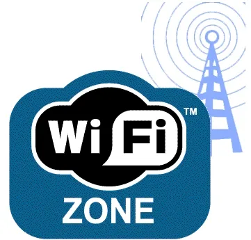

EEUU se encuentra a la cabeza en redes WiFi y España empeora con respecto al año anterior

Gowex ha presentado hoy la última edición de su "informe anual WiFi". Este documento recoge todo lo
referente a las redes inalámbricas: los diferentes operadores, dispositivos y legislación.
El informe hace hincapié en el desarrollo de la "vida wifi" en España. Por ejemplo, muestra que, con respecto
al año 2007, se ha dado un incremento medio porcentual de un 40,9% del número de puntos de acceso comerciales.
Las comunidades que más hotspots acumulan son Cataluña, Madrid o Andalucía, que durante el 2008 han crecido un 20%.
En el lado opuesto se sitúan Cantabria, La Rioja y Canarias.
Seguir leyendo...
La CMT explica los requisitos para ofrecer WiFi gratis
La Comisión de Mercado de las Telecomunicaciones (CMT) ha escrito un artículo en su blog explicando las
condiciones que deben cumplir las Administraciones Públicas para desplegar redes inalámbricas (WiFi) gratuitas.
Todos recordamos el proyecto del Ayuntamiento de Barcelona para ofrecer WiFi u otros ejemplos como Atarfe o
Puenteareas. Los medios responsabilizaron directamente a la CMT de impedir estos despliegues, por ello el regulador
ha intentado aclarar como está la legislación actual y los requisitos que deben cumplir las Administraciones Públicas
para ofrecer Internet gratis a los ciudadanos.
Seguir leyendo...